Fundada em 1978 pelo grupo francês Lafarge, a PAREX de 2001 até 2014 fez parte do grupo da Materis, empresa de produtos químicos para construção fundada quando a Lafarge vendeu seu braço de materiais especiais. A fórmula comprovada para o sucesso contínuo da PAREX está combinando o desenvolvimento global com uma forte presença local, garantindo que as pessoas estejam sempre próximas dos clientes locais. E agora um novo marco, desde 23 de maio de 2019 a PAREX faz parte do Grupo Sika. A marca PortoKoll pertence a PAREX, uma das marcas de argamassas e rejuntamentos, expertise do grupo no Brasil.
ARGAMASSA ESPECIAL PASTILHAS & MOSAICOS
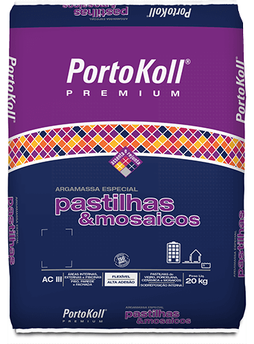- Indicação:
- Áreas internas, externas e piscinas
- Piso, parede e fachada
- Pastilhas e Mosaicos
ARGAMASSA ESPECIAL PASTILHAS & MOSAICOS

- Indicação:
- Pisos internos e externos
- Porcelanatos de baixa espessura
- Porcelanatos convencionais de grandes formatos
ARGAMASSA ESPECIAL PEDRAS NATURAIS
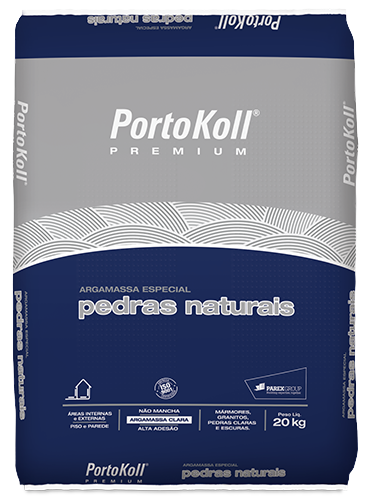- Indicação:
- Mármores, granitos, pedras claras e escuras
- Pisos e paredes
- PÁreas internas e externas
ARGAMASSA ESPECIAL PISCINAS
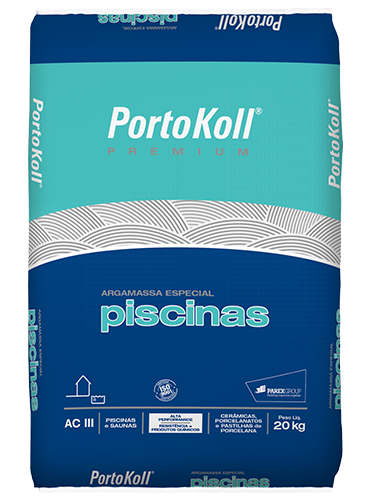- Indicação:
- Piscinas e saunas
- Cerâmicas, porcelanatos e pastilhas de porcelana
ARGAMASSA COLANTE SUPERPOLIMÉRICA FACHADAS
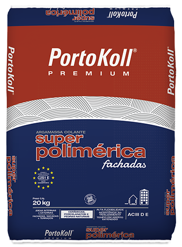- Indicação:
- Assentamento em fachadas com porcelanatos
- Assentamento de revestimentos de grandes formatos
- Recuperação de fachadas
ARGAMASSA ESPECIAL PORCELANATOS TÉCNICOS
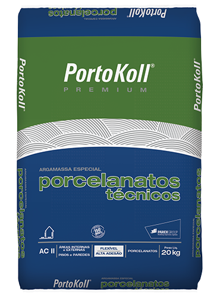- Indicação:
- Áreas internas e externas
- Áreas residenciais, comerciais e industriais
- Todos os tipos de revestimentos cerâmicos
ARGAMASSA ESPECIAL SUPERFLEX
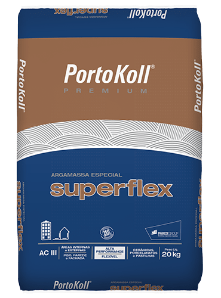- Indicação:
- Áreas internas e externas
- Piso, parede e fachadas
- Cerâmicas e porcelanatos
AARGAMASSA ESPECIAL SUPERFLEX BRANCA
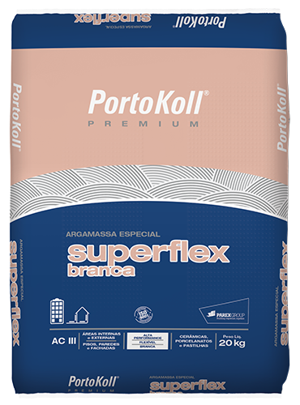- Indicação:
- Áreas internas e externas
- Piso, parede e fachadas
- Cerâmicas, porcelanatos e pastilhas
ARGAMASSA COLANTE PORCELANATOS INTERIORES PLUS BRANCA
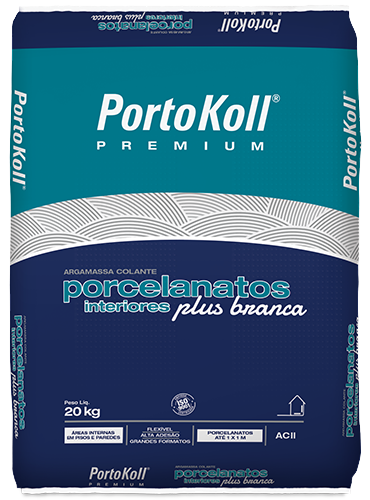- Indicação:
- Assentamento convencional de porcelanatos com formato de até 1 x 1 m, em pisos e paredes de ambientes internos, inclusive sobre paredes de drywall
ARGAMASSA ESPECIAL ULTRAFLEXÍVEL
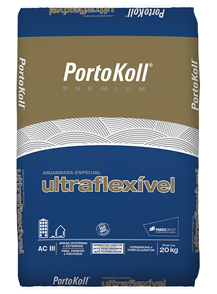- Indicação:
- Áreas internas e externas
- Pisos e paredes
- Ambientes amplos
ARGAMASSA ESPECIAL COZINHAS E BANHEIROS
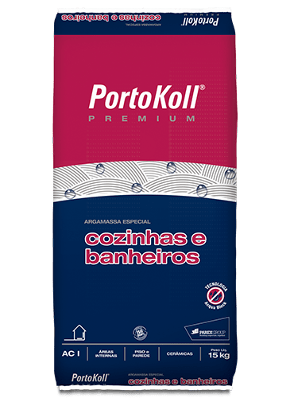- Indicação:
- Áreas internas
- Pisos e paredes
- Cerâmicas
ARGAMASSA ESPECIAL PORCELANATOS INTERIORES PLUS
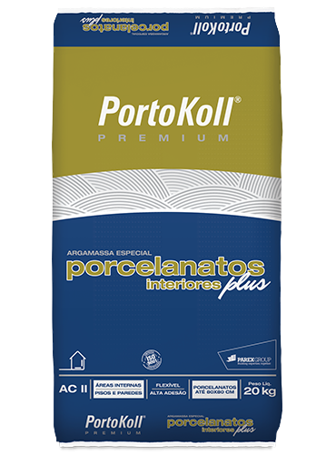- Indicação:
- Áreas internas
- Pisos e paredes
- Porcelanatos de até 80 x 80 cm
ARGAMASSA ESPECIAL SUPER PORCELANATOS
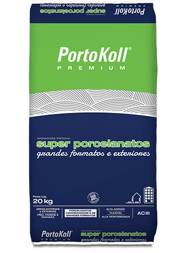- Indicação:
- Porcelanatos convencionais e de grandes formatos, cerâmicas e pastilhas
- Áreas internas e externas
- Fachadas de áreas residenciais, comerciais e industriais
ARGAMASSA ESPECIAL SUPERKOLL PISO SOBRE PISO EXTERIORES
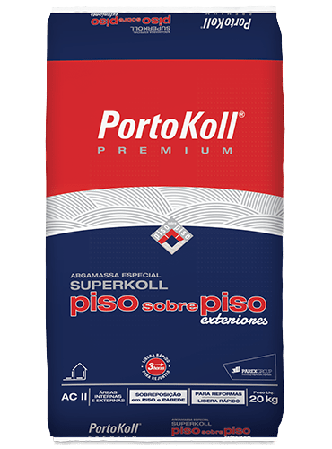- Indicação:
- Para reformas
- Áreas internas e externas
- Sobreposição em pisos e paredes em áreas internas e externas
ARGAMASSA ESPECIAL SUPERKOLL PISO SOBRE PISO INTERIORES
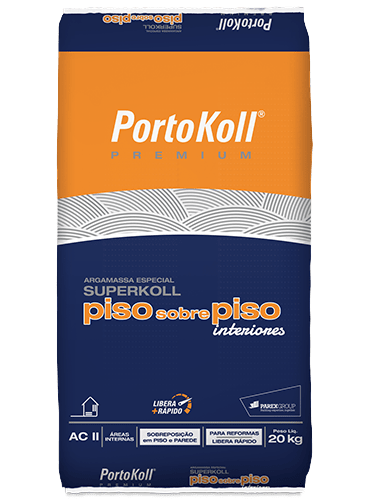- Indicação:
- Sobreposição em piso e parede
- Áreas internas
- Secagem rápida
REVESTE +FINO MASSA BRANCA PARA ACABAMENTO EXTRAFINO
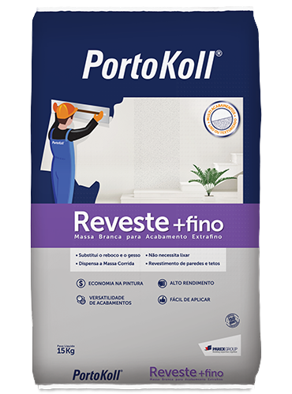- Indicação:
- Paredes e Tetos
- Áreas Secas ou Úmidas
- Espessuras 0,5 a 10 mm
ARGAMASSA ESPECIAL SUPERKOLL PISO SOBRE PISO INTERIORES BRANCA
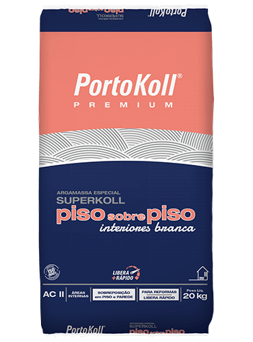- Indicação:
- Pisos e paredes em áreas internas
- Até 90 x 90 cm em sobreposição
- Até 1 x 1 m em assentamento convencional
ARGAMASSA MULTIUSO 4 EM 1 PLUS BRANCA
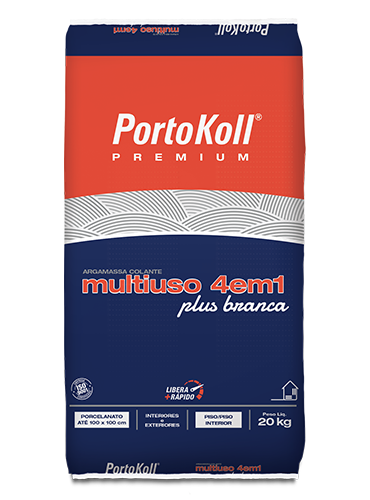- Indicação:
- Assentamento convencional e sobreposição de peças cerâmicas dos tipos grês, semigrês, porosas e monoporosas, e porcelanatos com formato até 100 x 100 cm em pisos e paredes
ARGAMASSA MULTIUSO 3 EM 1
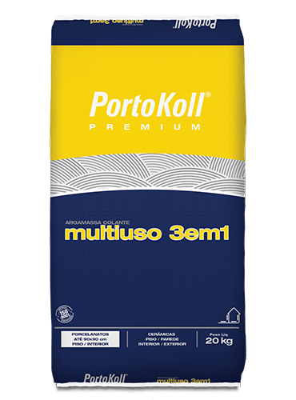- Indicação:
- Assentamento de cerâmicas dos tipos grês, semigrês, porosas e monoporosas de alta absorção, ardósias e porcelanatos em ambientes internos e externos
ARGAMASSA MULTIUSO 4 EM 1 PLUS
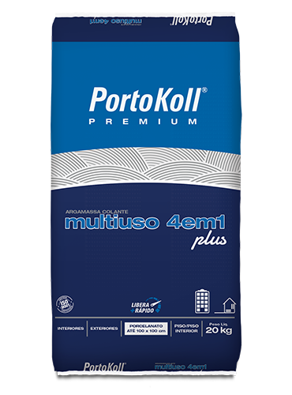- Indicação:
- Assentamento Convencional e Sobreposição de peças cerâmicas dos tipos grês, semigrês, porosas e monoporosas, e porcelanatos com formato até 100x100 cm em pisos e paredes externos
ARGAMASSA ESPECIAL SUPERGLASS BLOCOS DE VIDRO
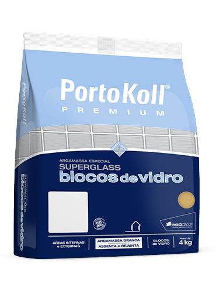- Indicação:
- Áreas internas e externas
- Blocos de vidro e cobogós
REJUNTAMENTO COLORIDO CERÂMICAS & PEDRAS
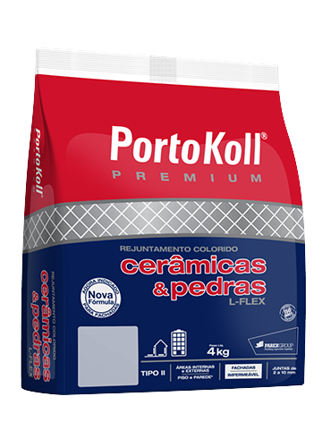- Indicação:
- Juntas de 2 a 10 mm
- Áreas internas e externas em pisos e paredes
- Fachadas
REJUNTAMENTO ESPECIAL PISCINAS ACQUA-FLEX
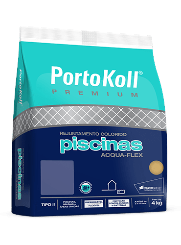- Indicação:
- Piscinas, saunas e áreas úmidas
- Proteção contra fungos e bactérias
- Juntas de 2 a 10 mm
ARGAMASSA ESPECIAL REFRATÁRIA
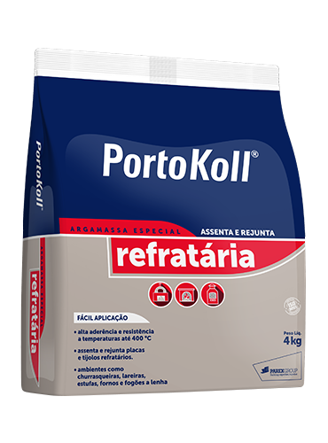- Indicação:
- Alta aderência e resistência a altas temperaturas até 400 °C.
- Assenta e Rejunta placas e tijolos refratários
- Ambientes como churrasqueiras, lareiras, estufas, fornos e fogões a lenha
REJUNTAMENTO ESPECIAL PASTILHAS METÁLICAS
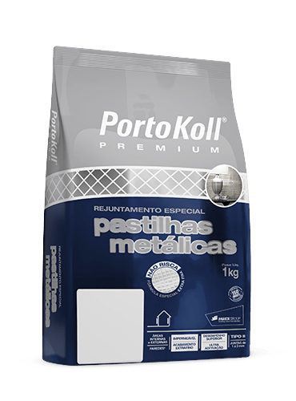- Indicação:
- Para o rejuntamento das pastilhas de inox e alumínio, utilize somente a desempenadeira emborrachada
- Recomendado especialmente para rejuntar pastilhas de inox e alumínio, em paredes de ambientes internos e externos
REJUNTAMENTO ESPECIAL TOPFLEX EXTRA RESINADO
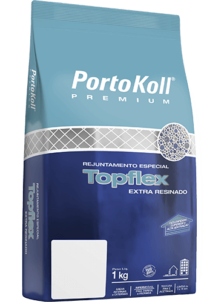- Indicação:
- Piso, parede e fachada
- Áreas internas e externas
- Juntas de 1 a 10 mm
ARGAMASSA MULTIUSO BRANCA
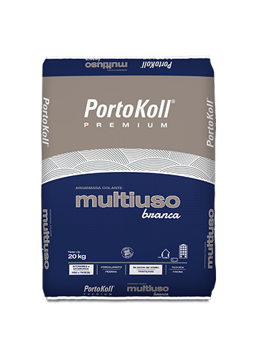- Indicação:
- Para assentamento de mármores, granitos, pedras, porcelanatos, blocos de vidro, pastilhas de vidro e porcelana, em pisos e paredes de áreas internas, externas, fachada e piscinas.
ARGAMASSA ESPECIAL CERÂMICAS 2 EM 1 FLEX
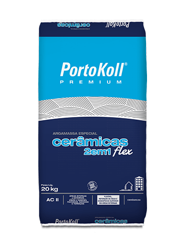- Indicação:
- Cerâmicas
- Áreas internas e externas, fachadas, sacadas e terraços
- Pisos e paredes
REJUNTAMENTO COLORIDO MULTIUSO PORCELANATOS, MÁRMORES & GRANITOS EXTRAFINO

- Indicação:
- Áreas internas e externas
- Piso, parede e fachada
- Juntas de 1 a 10 mm
AARGAMASSA COLANTE INTERIORES
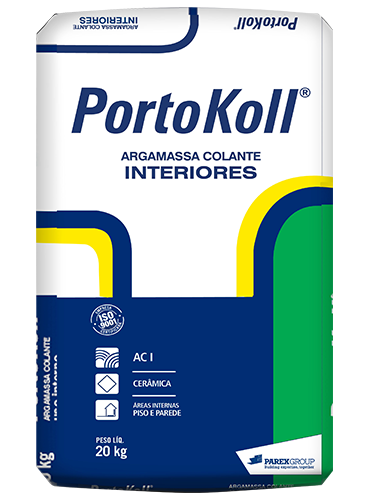- Indicação:
- AC I
- Áreas internas em pisos e paredes
- Cerâmicas
ARGAMASSA ESPECIAL BICOMPONENTE +ADERÊNCIA
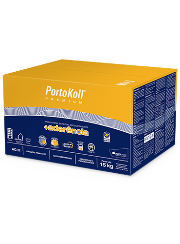- Indicação:
- Ambientes: em pisos e paredes de ambientes internos e externos, piscinas, saunas e fachadas (até 6 metros de altura)
ARGAMASSA ESPECIAL ULTRAFLEXÍVEL BICOMPONENTE RÁPIDA
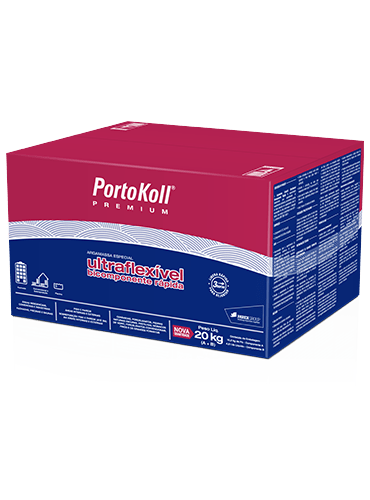- Indicação:
- Cerâmicas, pedras naturais escuras, pastilhas, mosaicos de vidro e porcelanatos convencionais, finos e de grandes formatos
- Áreas residenciais, comerciais e industriais
- Fachadas, piscinas e saunas
ARGAMASSA ESPECIAL EXTREMA ADERÊNCIA
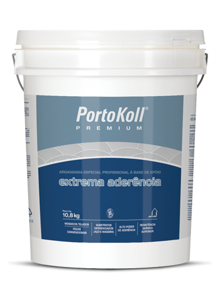- Indicação:
- Peças e substratos diferenciados, como aço, concreto, alvenaria e madeira
- Áreas residenciais, comerciais e industriais
- Mosaicos telados e peças convencionais flexíveis
REJUNTAMENTO COLORIDO EPÓXI PISCINAS
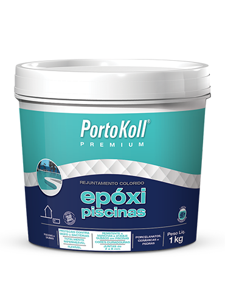- Indicação:
- Piscinas e saunas
- Porcelanatos, cerâmicas e pedras
- Juntas de 2 a 8 mm
REJUNTAMENTO COLORIDO EPÓXI PORCELANATO FINO TOQUE
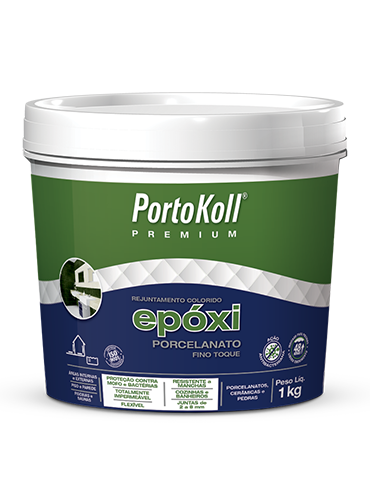- Indicação:
- ÁÁreas internas e externas
- Porcelanatos, cerâmicas e pedras
- Juntas de 2 a 8 mm
REJUNTAMENTO ESPECIAL ACRÍLICO ACABAMENTO ULTRALISO
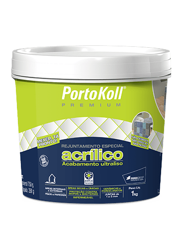- Indicação:
- Porcelanatos, cerâmicas, mármores e granitos, pedras naturais e pastilhas de porcelana
- Áreas internas e externas
- Juntas de 1 a 5 mm